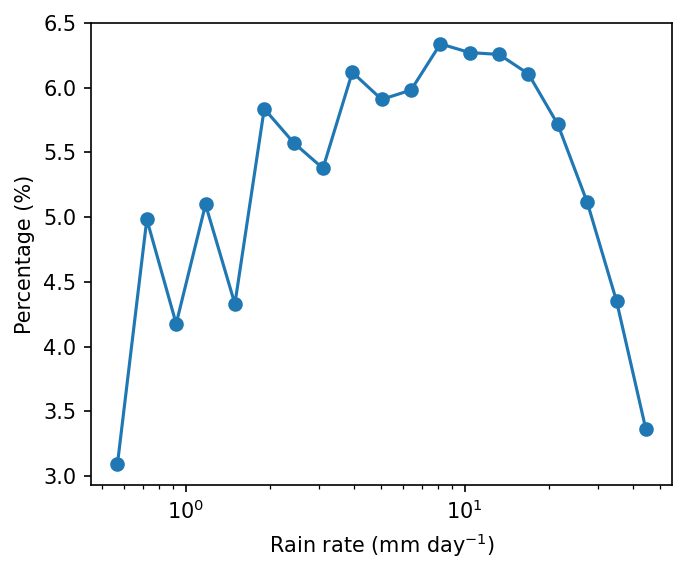
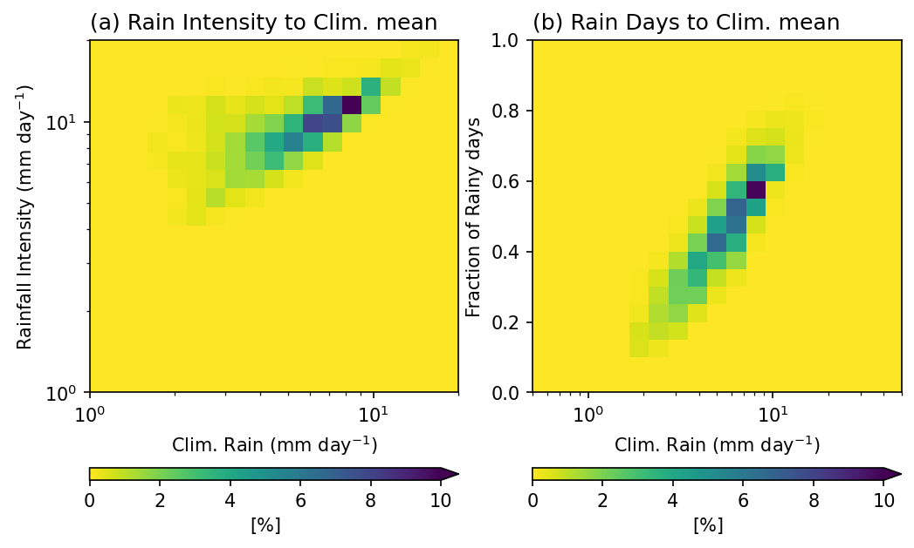
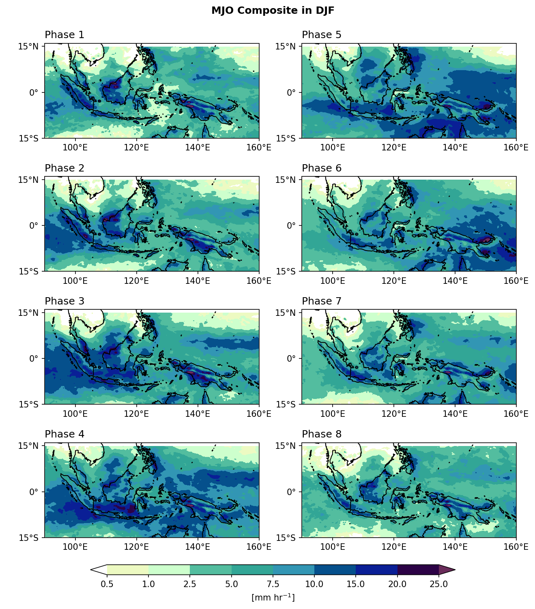

11. flox：進階的分組與重抽樣套件#
Flox 是一個專為xarray與dask設計的 分組 (groupby) 套件。事實上，xarray 內建的 groupby 函數就是由 Flox 驅動的。直接使用 Flox 可以帶來更高的彈性，特別是在處理大型資料或需要自訂分組邏輯時。在本章中，我們將著重於示範如何在xarray 的工作流程中使用 Flox。
flox.xarray.xarray_reduce 的語法如下：
flox.xarray.xarray_reduce(obj, *by, func, expected_groups=None, isbin=False, sort=True, dim=None, fill_value=None, dtype=None, method=None, engine=None, keep_attrs=True, skipna=None, min_count=None, reindex=None, **finalize_kwargs)
我們會用幾個實際的範例來示範怎麼設定。
Example 1: 利用flox計算OLR的月氣候平均。
import xarray as xr
import numpy as np
from flox.xarray import xarray_reduce
olr = xr.open_dataset('./data/olr.nc').olr
olr
<xarray.DataArray 'olr' (time: 8760, lat: 90, lon: 360)> Size: 1GB
[283824000 values with dtype=float32]
Coordinates:
* time (time) datetime64[ns] 70kB 1998-01-01 1998-01-02 ... 2021-12-31
* lon (lon) float32 1kB 0.5 1.5 2.5 3.5 4.5 ... 356.5 357.5 358.5 359.5
* lat (lat) float32 360B -44.5 -43.5 -42.5 -41.5 ... 41.5 42.5 43.5 44.5
Attributes:
standard_name: toa_outgoing_longwave_flux
long_name: NOAA Climate Data Record of Daily Mean Upward Longwave Fl...
units: W m-2
cell_methods: time: mean area: meanolr_MonClim = xarray_reduce(olr,
olr.time.dt.month,
func='nanmean',
isbin=False,
dim='time')
olr_MonClim
olr: 為DataArray變數，我們要計算這個變數的氣候平均。olr.time.dt.month: 將資料分組的根據，flox會按照這個組別分類。func='nanmean': 針對各個組別，進行統計運算的方法。Flox支援不同的統計函數如下：
“all”, “any”, “count”, “sum”, “nansum”, “mean”, “nanmean”,
“max”, “nanmax”, “min”, “nanmin”, “argmax”, “nanargmax”,
“argmin”, “nanargmin”, “quantile”, “nanquantile”,
“median”, “nanmedian”, “mode”, “nanmode”,
“first”, “nanfirst”, “last”, “nanlast”isbin: 決定是否要按照expected_groups定義的資料區間進行分組。在這個範例，我們只是按照資料時間的月份進行分組，是資料中的數值 (即12個月份)，因此設定為False。後續的範例會在介紹要設定為True的情形。dim='time': 指定要根據哪些資料軸進行統計計算。這裡是針對時間軸進行平均。
Example 2: 一維機率分布函數。 計算日降雨的機率分布函數。
Step 1: 讀資料。
pcp = xr.open_dataarray('./data/cmorph_sample.nc').sel(lat=slice(-15,15),lon=slice(90,160))
pcp_djf = pcp.sel(time=pcp.time.dt.month.isin([12,1,2]))
pcp_djf
<xarray.DataArray 'cmorph' (time: 2166, lat: 120, lon: 280)> Size: 291MB
[72777600 values with dtype=float32]
Coordinates:
* time (time) datetime64[ns] 17kB 1998-01-01 1998-01-02 ... 2021-12-31
* lon (lon) float32 1kB 90.12 90.38 90.62 90.88 ... 159.4 159.6 159.9
* lat (lat) float32 480B -14.88 -14.62 -14.38 ... 14.38 14.62 14.88
Attributes:
standard_name: lwe_precipitation_rate
long_name: precipitation
units: mm/day
ver_note: 1998-2020: V1,0; 2021: V0.x.
comment: !!! CMORPH estimate is rainrate !!!Step 2: 利用flox計算每個降雨資料區間的出現次數。從flox技術上來說，降雨DataArray會依據降雨資料的值進行分組。
pdf = xarray_reduce(pcp_djf,
pcp_djf,
func='count',
isbin=True,
expected_groups=np.geomspace(0.5, 50, 20),
dim=['time','lat','lon'])
pdf_percent = pdf / pdf.sum() * 100.
pdf_percent
<xarray.DataArray 'cmorph' (cmorph_bins: 19)> Size: 152B
array([3.09464685, 4.98283472, 4.17693794, 5.09792383, 4.33013187,
5.83681144, 5.57525959, 5.37691207, 6.11883881, 5.90911831,
5.98125898, 6.33805064, 6.27095539, 6.25657 , 6.10623415,
5.71656116, 5.11653848, 4.35264337, 3.36177241])
Coordinates:
* cmorph_bins (cmorph_bins) object 152B (0.5, 0.6371374928515668] ... (39....pcp_djf：要被分組的DataArray變數。由於我們要按照pcp_djf的數值進行分類，所以第二個參數 (byargument) 也同樣指定為pcp_djf。func='count'：統計方法為count，表示計算降雨數值落在各個資料區間的次數。isbin=True：代表按照expected_groups中定義的資料區間進行分組，而不是依據所有降雨資料的實際值逐一分組。expected_groups=np.geomspace(0.1, 50, 20)：設定分組的區間。我們使用對數間距 (geomspace)，因為降雨數值通常呈現對數分布。dim=['time','lat','lon']：將時間與空間維度 (time,lat,lon) 都納入統計，因此最後得到一維機率分布函數。
import matplotlib as mpl
from matplotlib import pyplot as plt
mpl.rcParams['figure.dpi'] = 150
fig, ax = plt.subplots(figsize=(5,4))
lineplt = pdf_percent.plot.line(x='cmorph_bins', marker='o', xscale='log',ax=ax)
ax.set_ylabel('Percentage (%)')
ax.set_xlabel(r'Rain rate (mm day$^{-1}$)')
Text(0.5, 0, 'Rain rate (mm day$^{-1}$)')

Example 3: 二維機率分布 (2-D Probability Distribution)。 這裡我們繪製 年平均降雨量 (annual mean rainfall)、降雨強度 (rainfall intensity)，以及 雨日比例 (fraction of rainy days)（> 0.5 mm day \(^{-1}\)）的二維機率分布。
這三個指標彼此互補，能夠更完整地描述降雨特性：
年平均降雨量（總量）：表示全年累積的降雨總量，但無法判斷這些降雨是來自頻繁的小雨，還是偶發的大雨。
雨日數（頻率）：顯示降雨發生的頻率。高總降雨量可能來自大量的雨日，也可能來自少數幾次極端降雨事件。
降雨強度（每個雨日的平均降雨量）：能區分降雨主要是以小雨為主，還是以豪雨為主。
同時觀察這三個變數，有助於理解總降雨量在頻率與強度之間的分配情況。這對於解讀氣候型態與評估水文影響都十分重要。
pcp_AnnualClm = pcp.mean(axis=0).rename('Annual_mean')
pcp_intensity = xr.where(pcp==0, np.nan, pcp).mean(axis=0,skipna=True).rename('Intensity')
# 在平均之前先將無降雨的格點設為NaN
pcp_days = xr.where(pcp>0.5, 1, 0).mean(axis=0,skipna=True).rename('Rain_days')
# 計算雨日 (> 0.5 mm day-1) 的比例。
RI_Clm_pdf = xarray_reduce(pcp_intensity,
pcp_intensity,pcp_AnnualClm,
func='count',
dim=['lat','lon'],
isbin=(True,True),
expected_groups=(np.geomspace(1, 20, 20), np.geomspace(1, 20, 20)))
Days_Clm_pdf = xarray_reduce(pcp_days,
pcp_days,pcp_AnnualClm,
func='count',
dim=['lat','lon'],
isbin=(True,True),
expected_groups=(np.arange(0,1.05,0.05), np.geomspace(0.5, 50, 20)))
pcp_intensity（第一個參數）：要被分組的變數。pcp_intensity,pcp_AnnualClm：Flox 依照降雨強度與年平均降雨量，將資料點進行聯合分組。func='count'：計算每個 (強度, 年平均) 資料區間內有多少格點。dim=['lat','lon']：沿空間維度進行統計計算發生次數。isbin=(True, True)：表示兩個分組變數都按照expected_group中自定義的資料區間進行分組。expected_groups：設定資料區間邊界。這裡兩個變數都使用對數間距的分組方式（1–20 mm/day），可在降雨較小的範圍提供更高解析度。
Note
在此例中，第一個參數 pcp_intensity 因為使用 func='count'，其數值實際上不會被使用，僅提供 Flox 對齊與形狀資訊。不過，如果目的是計算另一個變數 x 在降雨強度與年平均分組區間下的統計量，那麼第一個參數就決定了要被分組、聚合的變數，此時其數值才具有意義。
得到的結果變數 RI_Clm_pdf 是一個二維機率分布圖，顯示在空間域內不同降雨強度與年平均降雨量的組合出現的頻率。若除以總格點數，即可得到機率分布。
RI_Clm_pdf_percent = RI_Clm_pdf / RI_Clm_pdf.sum() * 100.
Days_Clm_pdf_percent = Days_Clm_pdf / Days_Clm_pdf.sum() * 100.
mpl.rcParams['figure.dpi'] = 150
fig, axes = plt.subplots(1,2,figsize=(8,5))
ax = axes.flatten()
RI_Clm_plt = RI_Clm_pdf_percent.plot.pcolormesh(x='Annual_mean_bins',y='Intensity_bins',
xscale='log',yscale='log',
cmap='viridis_r',ax=ax[0],
vmin=0, vmax=10,
extend='max',
cbar_kwargs={'orientation': 'horizontal', 'aspect': 30, 'label': r'[%]'})
ax[0].set_title('(a) Rain Intensity to Clim. mean',loc='left')
ax[0].set_ylabel(r'Rainfall Intensity (mm day$^{-1}$)')
ax[0].set_xlabel(r'Clim. Rain (mm day$^{-1}$)')
Day_Clm_plt = Days_Clm_pdf_percent.plot.pcolormesh(x='Annual_mean_bins',y='Rain_days_bins',
xscale='log',
cmap='viridis_r',ax=ax[1],
vmin=0, vmax=10,
extend='max',
cbar_kwargs={'orientation': 'horizontal', 'aspect': 30, 'label': r'[%]'})
ax[1].set_title('(b) Rain Days to Clim. mean',loc='left')
ax[1].set_ylabel('Fraction of Rainy days')
ax[1].set_xlabel(r'Clim. Rain (mm day$^{-1}$)')
Text(0.5, 0, 'Clim. Rain (mm day$^{-1}$)')

Example 4: 合成平均。 繪製8個MJO相位的降雨合成平均。
Step 1: 讀MJO相位資料。
import pandas as pd
# Read MJO data
mjo_ds = xr.open_dataset('http://iridl.ldeo.columbia.edu/SOURCES/.BoM/.MJO/.RMM/dods',
decode_times=False)
T = mjo_ds.T.values
mjo_ds['T'] = pd.date_range("1974-06-01", periods=len(T)) # Data starts from 1974-06-01
mjo_sig_phase = xr.where(mjo_ds.amplitude>=1, mjo_ds.phase, 0).rename('mjo_phase')
# Only significant (amplitude >= 1) MJO events are preserved.
mjo_slice = mjo_sig_phase.sel(T=slice("1998-01-01","2021-12-31"))
mjo_djf = mjo_slice.sel(T=mjo_slice['T'].dt.month.isin([12, 1, 2])).rename({'T':'time'})
syntax error, unexpected WORD_WORD, expecting ';' or ','
context: Attributes { T { String calendar "standard"; Int32 expires 1755820800; String standard_name "time"; Float32 pointwidth 1.0; Int32 gridtype 0; String units "julian_day"; } amplitude { Int32 expires 1755820800; String units "unitless"; Float32 missing_value 9.99999962E35; } phase { Int32 expires 1755820800; String units "unitless"; Float32 missing_value 999.0; } RMM1 { Int32 expires 1755820800; String units "unitless"; Float32 missing_value 9.99999962E35; } RMM2 { Int32 expires 1755820800; String units "unitless"; Float32 missing_value 9.99999962E35; }NC_GLOBAL { String references "Wheeler_Hendon2004"; Int32 expires 1755820800; URL Wheeler and Hendon^ (2004) Monthly Weather Review article "http://journals.ametsoc.org/doi/abs/10.1175/1520-0493(2004)132%3C1917:AARMMI%3E2.0.CO;2"; String description "Real-time Multivariate MJO Index (with components of interannual variability removed)"; URL summary from BoM "http://www.bom.gov.au/climate/mjo/"; URL data source "http://www.bom.gov.au/climate/mjo/graphics/rmm.74toRealtime.txt"; String Conventions "IRIDL";}}
Illegal attribute
context: Attributes { T { String calendar "standard"; Int32 expires 1755820800; String standard_name "time"; Float32 pointwidth 1.0; Int32 gridtype 0; String units "julian_day"; } amplitude { Int32 expires 1755820800; String units "unitless"; Float32 missing_value 9.99999962E35; } phase { Int32 expires 1755820800; String units "unitless"; Float32 missing_value 999.0; } RMM1 { Int32 expires 1755820800; String units "unitless"; Float32 missing_value 9.99999962E35; } RMM2 { Int32 expires 1755820800; String units "unitless"; Float32 missing_value 9.99999962E35; }NC_GLOBAL { String references "Wheeler_Hendon2004"; Int32 expires 1755820800; URL Wheeler and Hendon^ (2004) Monthly Weather Review article "http://journals.ametsoc.org/doi/abs/10.1175/1520-0493(2004)132%3C1917:AARMMI%3E2.0.CO;2"; String description "Real-time Multivariate MJO Index (with components of interannual variability removed)"; URL summary from BoM "http://www.bom.gov.au/climate/mjo/"; URL data source "http://www.bom.gov.au/climate/mjo/graphics/rmm.74toRealtime.txt"; String Conventions "IRIDL";}}
Step 2: 按照MJO相位分組平均。
mjo_phase_comp = xarray_reduce(pcp_djf,
mjo_djf,
func='nanmean',
dim='time',
isbin=False,
)
mjo_phase_comp
<xarray.DataArray 'cmorph' (mjo_phase: 9, lat: 120, lon: 280)> Size: 1MB
array([[[1.5509361 , 1.5476524 , 1.5360179 , ..., 6.1897774 ,
6.044517 , 5.838945 ],
[1.644101 , 1.5174888 , 1.6073403 , ..., 6.6764784 ,
6.6883655 , 6.3710103 ],
[1.7099406 , 1.5615454 , 1.6053046 , ..., 7.1074147 ,
7.0514264 , 6.989376 ],
...,
[1.2247697 , 1.2321248 , 1.0660772 , ..., 0.9790045 ,
0.91200596, 0.8479941 ],
[0.9963893 , 0.90916795, 0.7632095 , ..., 1.0414264 ,
0.996211 , 0.9376969 ],
[0.74106985, 0.6703715 , 0.6609807 , ..., 1.0852897 ,
1.0059881 , 0.92294204]],
[[2.1850576 , 2.1586208 , 2.3988507 , ..., 5.4770117 ,
4.7149425 , 4.7413793 ],
[2.2839081 , 2.4195402 , 2.4873564 , ..., 5.5850577 ,
4.9080462 , 5.1747127 ],
[2.4034483 , 3.0367815 , 3.254023 , ..., 5.462069 ,
5.521839 , 5.8977013 ],
...
[0.2897544 , 0.26273686, 0.29249123, ..., 0.74992985,
0.7251579 , 0.681193 ],
[0.24196492, 0.19701755, 0.1731579 , ..., 0.7130176 ,
0.6249825 , 0.6207018 ],
[0.16712281, 0.14017543, 0.15249123, ..., 0.62736845,
0.57480705, 0.5857895 ]],
[[1.9496454 , 1.8248227 , 1.8163121 , ..., 4.546099 ,
4.824823 , 5.4425535 ],
[1.9907802 , 2.1276596 , 2.283688 , ..., 4.7184396 ,
5.012766 , 5.05461 ],
[2.555319 , 2.703546 , 2.8758867 , ..., 5.4425535 ,
5.6014185 , 5.35461 ],
...,
[0.75886524, 0.72269505, 0.57588655, ..., 3.2198582 ,
3.0680852 , 3.1226952 ],
[0.8056738 , 0.6815603 , 0.55602837, ..., 3.7794328 ,
3.487234 , 3.0744681 ],
[0.5156028 , 0.56950355, 0.5382979 , ..., 3.7475178 ,
3.7709222 , 3.3829787 ]]], dtype=float32)
Coordinates:
* lon (lon) float32 1kB 90.12 90.38 90.62 90.88 ... 159.4 159.6 159.9
* lat (lat) float32 480B -14.88 -14.62 -14.38 ... 14.38 14.62 14.88
* mjo_phase (mjo_phase) float32 36B 0.0 1.0 2.0 3.0 4.0 5.0 6.0 7.0 8.0
Attributes:
standard_name: lwe_precipitation_rate
long_name: precipitation
units: mm/day
ver_note: 1998-2020: V1,0; 2021: V0.x.
comment: !!! CMORPH estimate is rainrate !!!在這個範例中，降雨資料
pcp_djf是根據MJO相位mjo_djf分組的。對於每一組MJO相位，func='nanmean'在時間軸 (dim='time') 上計算平均的降雨。也就是說，所有屬於這個MJO相位的時間，都會被聚集在一起且平均。isbin=False: 代表我們是按照mjo_djf中的相位數值 (相位1–8) 來分組的，不是另外定義的資料區間。
Step 3: Plotting.
import cmaps
from cartopy import crs as ccrs
from cartopy.mpl.gridliner import LONGITUDE_FORMATTER, LATITUDE_FORMATTER
mpl.rcParams['figure.dpi'] = 150
fig, axes = plt.subplots(4,2,
subplot_kw={'projection': ccrs.PlateCarree()},
figsize=(10,11))
ax = axes.flatten()
lon_formatter = LONGITUDE_FORMATTER
lat_formatter = LATITUDE_FORMATTER
clevs = [0.5,1,2.5,5,7.5,10,15,20,25]
porder = [0,2,4,6,1,3,5,7]
for i in range(1,9):
cf = (mjo_phase_comp[i,:,:].plot.contourf(x='lon',y='lat', ax=ax[porder[i-1]],
levels=clevs,
add_colorbar=False,
cmap=cmaps.precip_11lev,
extend='both',
transform=ccrs.PlateCarree()))
ax[porder[i-1]].coastlines()
ax[porder[i-1]].set_extent([90,160,-15,16],crs=ccrs.PlateCarree())
ax[porder[i-1]].set_xticks(np.arange(100,180,20), crs=ccrs.PlateCarree())
ax[porder[i-1]].set_yticks(np.arange(-15,30,15), crs=ccrs.PlateCarree()) # 設定x, y座標的範圍，以及多少經緯度繪製刻度。
ax[porder[i-1]].xaxis.set_major_formatter(lon_formatter)
ax[porder[i-1]].yaxis.set_major_formatter(lat_formatter)
ax[porder[i-1]].set_xlabel(' ')
ax[porder[i-1]].set_ylabel(' ')
ax[porder[i-1]].set_title(' ')
ax[porder[i-1]].set_title('Phase '+str(i), loc='left')
# Add a colorbar axis at the bottom of the graph
cbar_ax = fig.add_axes([0.2, 0.07, 0.6, 0.015])
# Draw the colorbar 將colorbar畫在cbar_ax這個軸上。
cbar = fig.colorbar(cf, cax=cbar_ax,
orientation='horizontal',
ticks=clevs,
label=r'[mm hr$^{-1}$]')
plt.subplots_adjust(hspace=0.15)
plt.suptitle('MJO Composite in DJF',y=0.92,size='large',weight='bold')
plt.show()
